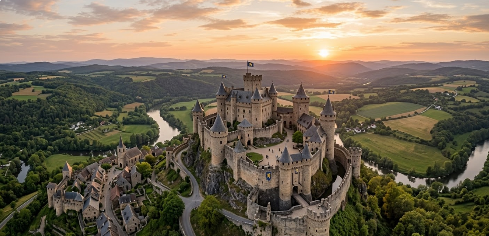

castillo
río
cielo
aldea
Al contemplar este castillo, es imposible no dejar volar la imaginación y visualizar caballeros en armadura, damas en vestidos elegantes y batallas legendarias. Cada rincón de sus muros, cada torre y cada pasadizo cuentan una historia, esperando ser descubierta por aquellos que se atreven a explorar sus secretos.
Este castillo en la montaña, con el cielo, el río y el pueblo a sus pies, es un lugar mágico que nos transporta a otra época y nos invita a reflexionar sobre la historia, la naturaleza y la belleza de nuestro mundo.
Al contemplar este castillo, es imposible no dejar volar la imaginación y visualizar caballeros en armadura, damas en vestidos elegantes y batallas legendarias. Cada rincón de sus muros, cada torre y cada pasadizo cuentan una historia, esperando ser descubierta por aquellos que se atreven a explorar sus secretos.